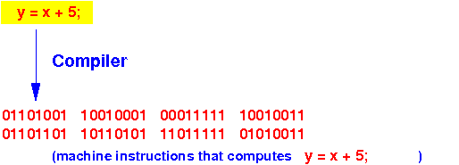

- Computer program:
- Computer program =
a series of computer instruction (a.k.a. machine instructions) that tells the computer what operations it needs to perform at each step
+
a number of variables used to store information (values) used by instructions in the computer program

- Computer program =
- Machine instruction:
- Machine instruction =
a binary number that
encodes
an action that a computer
must perform
- Each machine instructions is
represented by a
specific
binary pattern
See: instruction encoding click here
- Each machine instructions is
represented by a
specific
binary pattern
- Machine instruction =
a binary number that
encodes
an action that a computer
must perform
-
This is what a machine (= computer) instruction
would look like:
11010100 10100010 00010001 11110000 ...... binary numbers !The computer uses these binary numbers to control its internal circuitry to execute the encoded instruction
- You can learn more about how computer instructions are executed in the course CS355
- Machine codes
(a.k.a. computer instruction codes):
- Each
machine operation
is uniquely represented
by a
binary number (= code)
- Sample
machine operations are:
- Copy the value stored in a memory location to another memory location
- Add two values and store the sum in the destination
- Subtract two values and store the difference in the destination
- Jump to a certain location in computer (RAM) memory
- And so on....
- Each
machine operation
is uniquely represented
by a
binary number (= code)
- Computer program:
- Computer program = a sequence of machine instructions (codes)
- Fact:
- Program a computer = write a sequence of machine codes ( = binary numbers !!!) to tell the computer to do what you want
- How we
program a
computer in the
pioneer days:
What you need to do is:
- Flip a row switches to
ON/OFF to
represent a row of
0/1 that
represent the
binary code for
a computer instruction
- Then press store to
store the
instruction into the
next
computer memory
- Repeat the steps
- Flip a row switches to
ON/OFF to
represent a row of
0/1 that
represent the
binary code for
a computer instruction
- Observation:
- It's very tedious to write binary numbers (by flipping switches) !!!
- Assembler instruction:
- Assembler instruction =
a mnemonic code to
represent a
machine instruction:
- Each machine instruction corresponds to exactly one assembler instruction
- Assembler instruction =
a mnemonic code to
represent a
machine instruction:
- Assembler program:
- Assembler program =
a program written in
assembler instructions
or
assembler language
- An assembler language is
also known as:
- The 2nd generation programming language
- Assembler program =
a program written in
assembler instructions
or
assembler language
- Examples of
assembler instructions:
move x, y ; copy data stored in memory location x to mem loc y add #1, y ; y = y + 1
- Assembler programming:
- The programmer writes his/her program with assembler instructions using a text editor (e.g.: gedit)
- Assembler:
- Assembler =
a computer program
that
translate the
assembler instructions
in an (low level) assembler program into
(executable)
machine instructions
Graphically:
- Assembler =
a computer program
that
translate the
assembler instructions
in an (low level) assembler program into
(executable)
machine instructions
- Note:
- There is a one-to-one correspondence
between
assembler instruction and
machine instruction !!!
- One assembler instruction
will translate to
one machine instruction
(= binary number)
- One machine instruction has one assembler instruction (nmemonic)
- One assembler instruction
will translate to
one machine instruction
(= binary number)
- There is a one-to-one correspondence
between
assembler instruction and
machine instruction !!!
-
Assembler programming
vs.
machine language (binary) programming:
- Assembler programming was much easier to program than flipping swutches to code binary numbers !!!
However:
- Assembler programming
was very closely
related to
machine language programming:
- There is an one-to-one correspondence between an assembler instruction and a machine instruction
- More importantly:
- An assembler programmer must have intimate understanding of the internals of the CPU before s/he can write an assembler program !!!
- Fact:
- Assembler instructions (= machine instruction !!!) must use resources (registers !!!) inside the CPU (Central Processing Unit)
Therefore: when we learn assembler programming using M68000
- We will need to know the structure of the M68000 CPU
We will study the M68000 CPU soon...
- High level programming language:
- High level programming language = a programming language that allows the programmer to express an algorithm without knowing the internal details of the computer used to execute the computer program
Sample high level programming languages:
- Java !!!
- C
- Python
- And so on (too many to mention)
- Compiler:
- Compiler =
a computer program
that
translate the
statements in a
(high level) programming language into
(executable)
machine instructions
- One statement in a high level language usually translates into multiple (many) machine instructions !!!
Graphically:

- Compiler =
a computer program
that
translate the
statements in a
(high level) programming language into
(executable)
machine instructions
- Key:
- For each computer, we must write a compiler that translate the high level language program to the assembler language of that machine
- How to
achieve
"machine independence" using
a compiler:
- Suppose we
have 2 different computers
X and Y
- We want to run
the same program on
these computers
- How to execute
the same program on the
different computers:
- Suppose we
have 2 different computers
X and Y